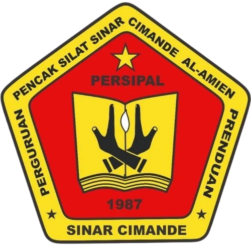
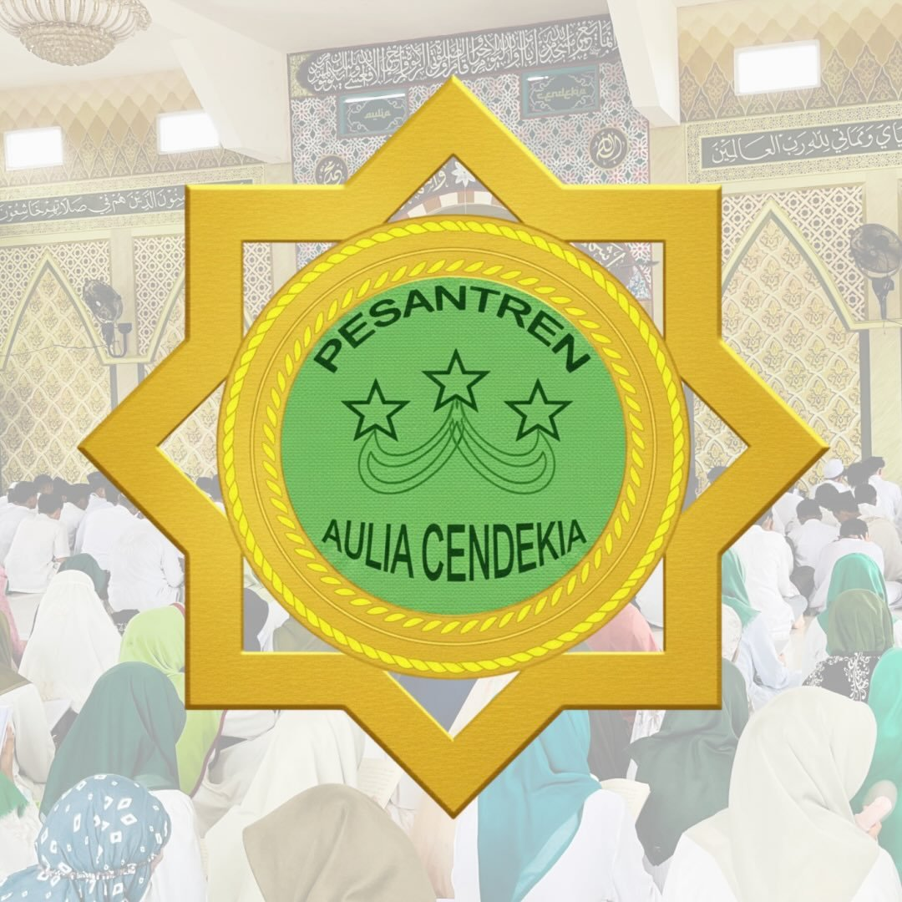

In my first year at Ponpes Aulia Cendekia, I became interested in joining Sanpala (Santri Pecinta Alam). Through this organization I learned a great deal about teamwork, professionalism, loyalty, and integrity. I was also part of the committee for the 9th and 10th Sanpala basic training (Diksar). After two years as a junior member, I stepped down from the active board, passing it on to the next generation. Although I'm no longer an active board member, I'm still a Junior Member of the 2023 cohort. Di tahun pertama saya di Ponpes Aulia Cendekia, Saya tertarik mengikuti Organisasi Sanpala (Santri Pecinta Alam) di Ponpes Aulia Cendekia. Mengikuti organisasi ini, saya belajar banyak tentang kerja sama, profesional, loyalitas dan integritas. Saya juga terlibat dalam panitia Diksar Sanpala Ke-9 dan Ke-10. Sudah 2 tahun menjadi anggota muda dan pada akhirnya tahun turun jabatan dari pengurus aktif dan diteruskan generasi selanjutnya. Meskipun bukan menjadi pengurus aktif lagi, tapi saya masih berstatus Anggota Muda angkatan tahun 2023.

I joined this Pencak Silat group in my first year at Ponpes Aulia Cendekia (2023). In roughly eight months I completed my training and took the final exam to become an official member. In 2024 I was formally inducted as a member and active board member. I served as an active board member for about two years. By the end of 2025 I decided to become a boarding santri (PP) and stepped back from the board. Even so, I still drop by from time to time to coach. Saya mengikuti Pencak Silat Ini, pada tahun awal saya di Ponpes Aulia Cendekia 2023. Kurang lebih dalam waktu 8 bulan saya menyelesaikan latihan saya dan mengikuti ujian akhir untuk menjadi anggota resmi. Pada tahun 2024 saya resmi diangkat menjadi anggota dan pengurus aktif. Kurang lebih 2 tahun saya mengabdi menjadi Pengurus Aktif. Saya juga terlibat dalam setiap kegiatan ujian kenaikan tingkat pada masa aktif saya. Pada akhir tahun 2025 saya memutuskan menjadi santri PP dan tidak aktif lagi menjadi pengurus. Namun saya masih sesekali datang untuk melatih walapun tidak seaktif dulu.
At Ponpes Aulia Cendekia, senior students are required to join IPNU or IPPNU, since this organization handles the formal-school side of the pesantren. My term of service ran from the middle of 11th grade to the end of 12th grade. I was heavily involved in events, competitions, meetings, and school programs. In the end, the board was handed over to the next generation. Di dalam Ponpes Aulia Cendekia, para santri kelas akhir diwajibkan mengikuti organisasi IPNU atau IPPNU. Karna organisasi ini bergerak dalam mengurus bagian sekolah formal Ponpes Aulia Cendekia. Masa abdi saya pada pertengahan kelas 11 sampai akhir kelas 12. Saya banyak terlibat dalam kegiatan acara, lomba, rapat, dan program sekolah. Pada akhirnya, Sudah pergantian pengurus ke generasi selanjutnya.

Ponpes Aulia Cendekia also requires resident (mukim) santri to serve on the IKSA board (Ikatan Santri Aulia Cendekia). I served the boarding school from the middle to the end of 11th grade, since I moved to become a non-resident santri. I took part in many activities, events, and competitions. I learned to set a good example for the younger students at the pesantren. Ponpes Aulia Cendekia juga mewajibkan santri mukim untuk menjadi pengurus IKSA (Ikatan Santri Aulia Cendekia). Saya mengabdi untuk pondok pada pertengahan sampai akhir kelas 11, Karena saya pindah menjadi santri non-mukim. Saya terlibat banyak kegiatan, acara, dan lomba yang di selenggarakan. Saya belajar menjadi contoh yang baik untuk adik-adik saya di pondok.